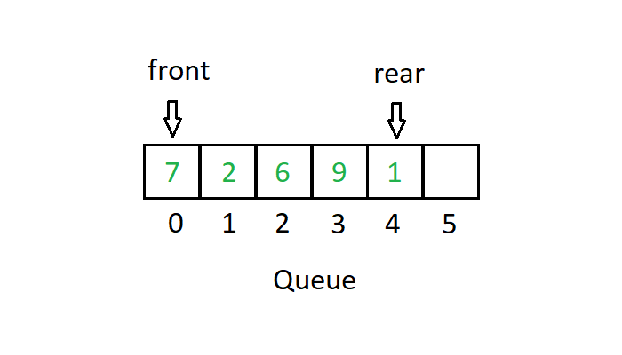
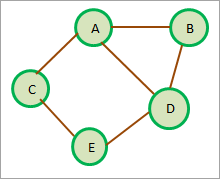

It is a binary tree data structure in which a node's left subtree contains only nodes with keys lesser than the node’s key
and its right subtree contains only nodes with keys greater than the node’s key.

AVL Trees
AVL tree is a self-balancing Binary Search Tree (BST) where the difference between heights of left and right subtrees cannot be more than one for all nodes.
Red-Black Trees
A red-black tree is a kind of self-balancing BST where each node has an extra bit(colour-red or black). These colours are used to ensure that the tree remains balanced during insertions and deletions.
B Trees
B-tree is a self-balancing tree data structure that maintains sorted data and allows searches, sequential access, insertions, and deletions in logarithmic time. It allows for nodes with more than 2 children.

B+ Trees
B+ Tree is an extension of B Tree which allows efficient insertion, deletion and search operations. Records (data) can only be stored on the leaf nodes while internal nodes can only store the key values.